The Monster Project was a team project in which we created an interactive experience based on monsters drawn by children from International School Twente. The project was inspired by The Monster Project, an initiative where children's monster drawings are transformed into new creative interpretations.
As part of the project, the children were asked to draw their own monster and think about its emotions and special abilities. We then used these drawings as inspiration to create our own digital versions of the monsters. Our team decided to turn these monsters into a game inspired by Pokémon Snap.
In the game, players travel across three different regions filled with monsters. Their goal is to take pictures of the monsters they encounter and earn points based on the pictures they take. We created 3D versions of the children's drawings and brought them into the game as the monsters players can discover and photograph.
The game was designed with the children as the target audience, so we focused on making the experience accessible and easy to understand. The completed game was eventually presented at a Monster exhibition at the Library of Enschede, where visitors could play the game themselves.
My Contribution
As the Designer on the team, I was responsible for designing and creating most of the game's UI. My main contributions included:
- Main menu
- Volume mixer / settings
- Monster Dex
- Camera interface
- Camera shutter animation
I designed the different UI elements to fit the visual style of the game while keeping them clear and accessible for our target audience. I also worked on the Monster Dex, where players could view the monsters they had discovered, and the camera interface used when taking pictures.
Working on this project gave me experience designing interfaces for a younger target audience and taught me how to consider accessibility and clarity when designing interactions for children. It also gave me experience working as part of a team and translating creative ideas into an interactive experience.

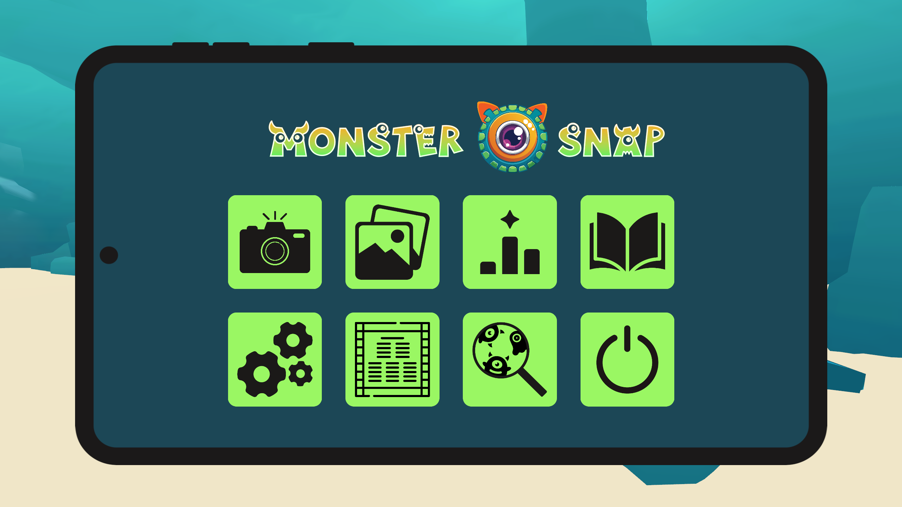
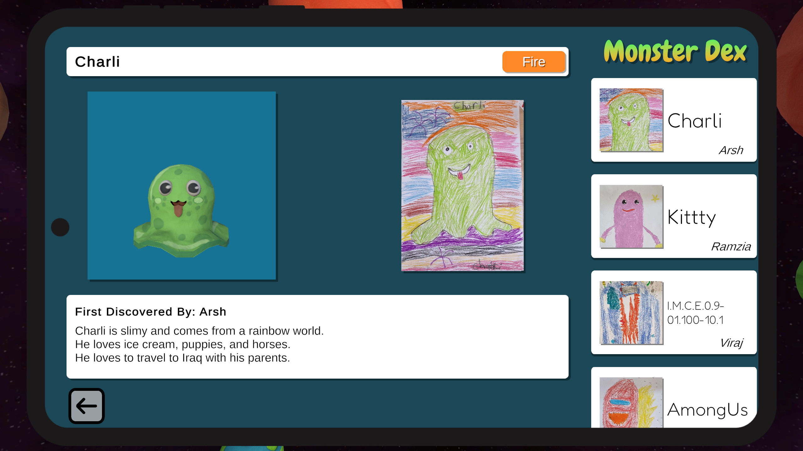
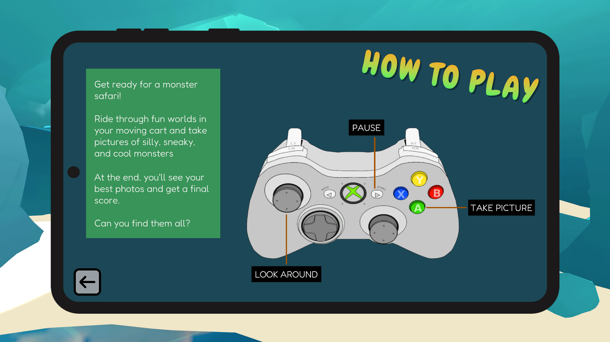
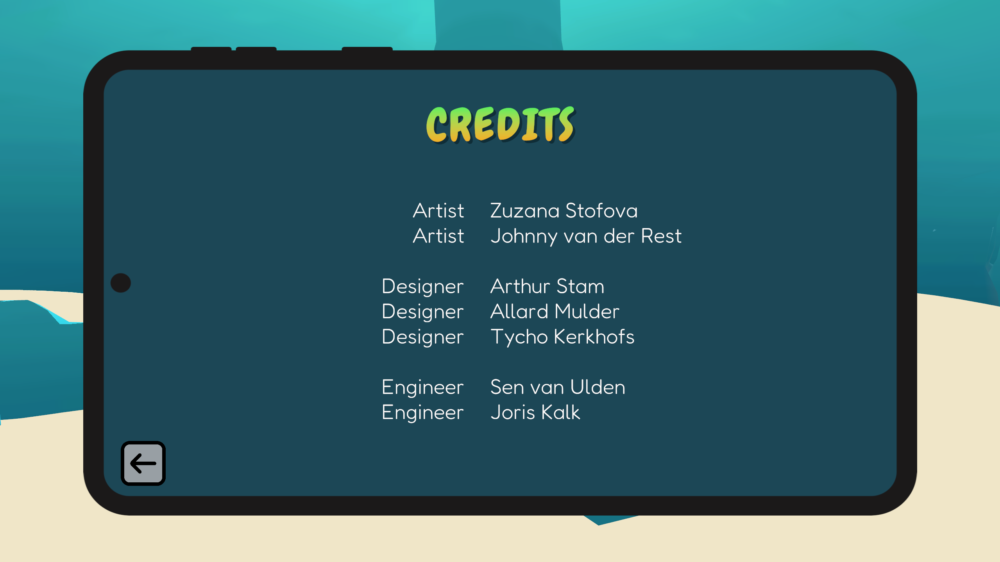
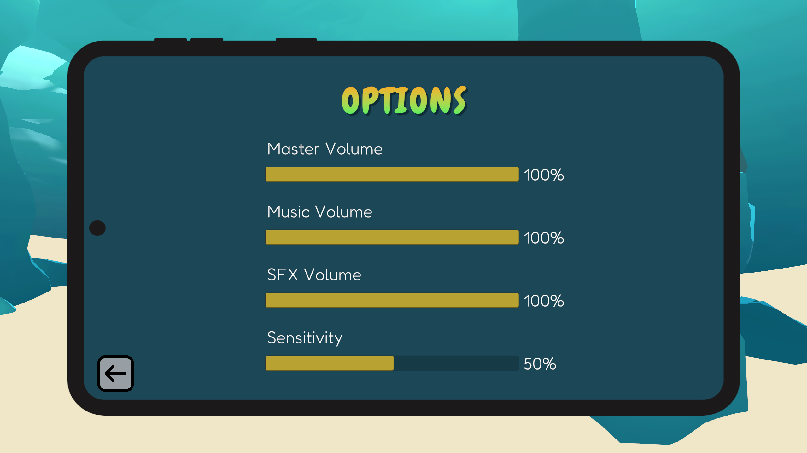
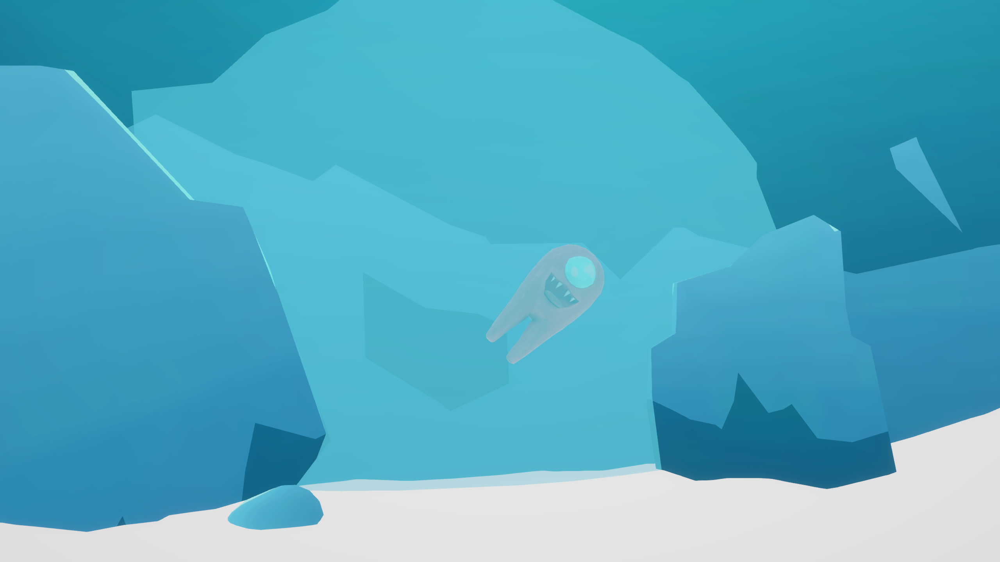
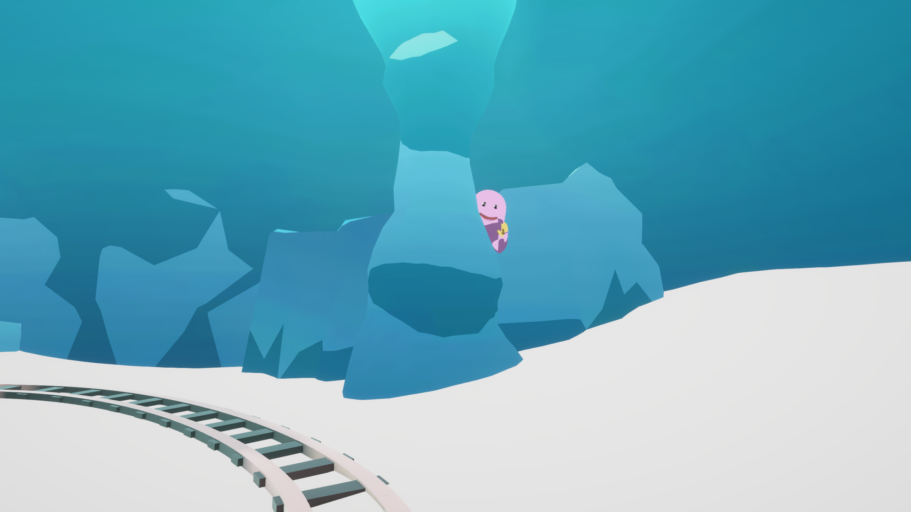
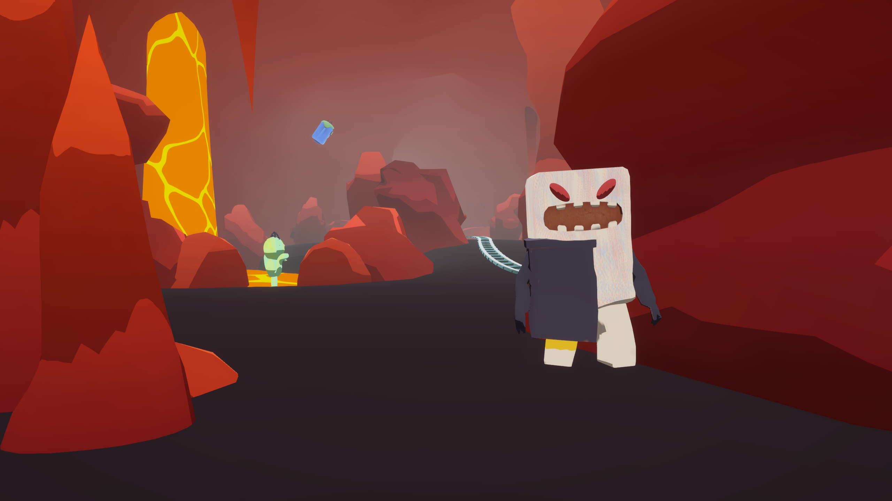
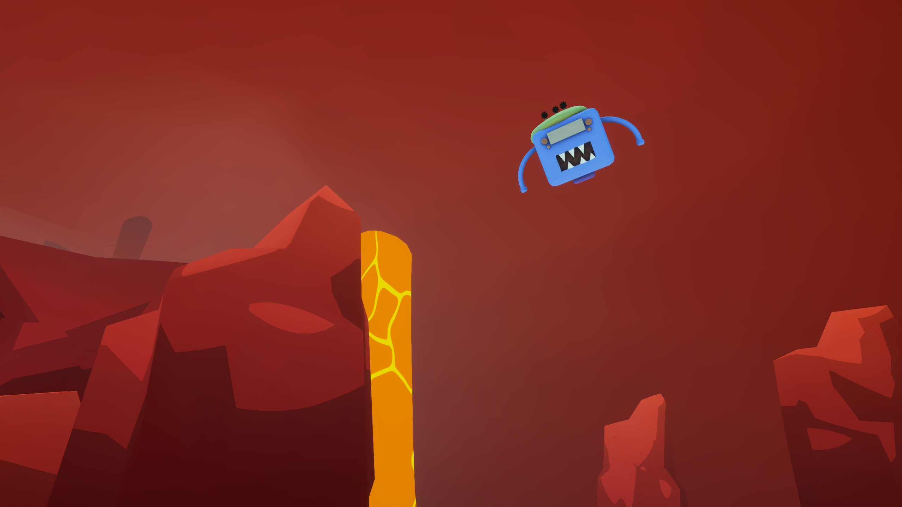
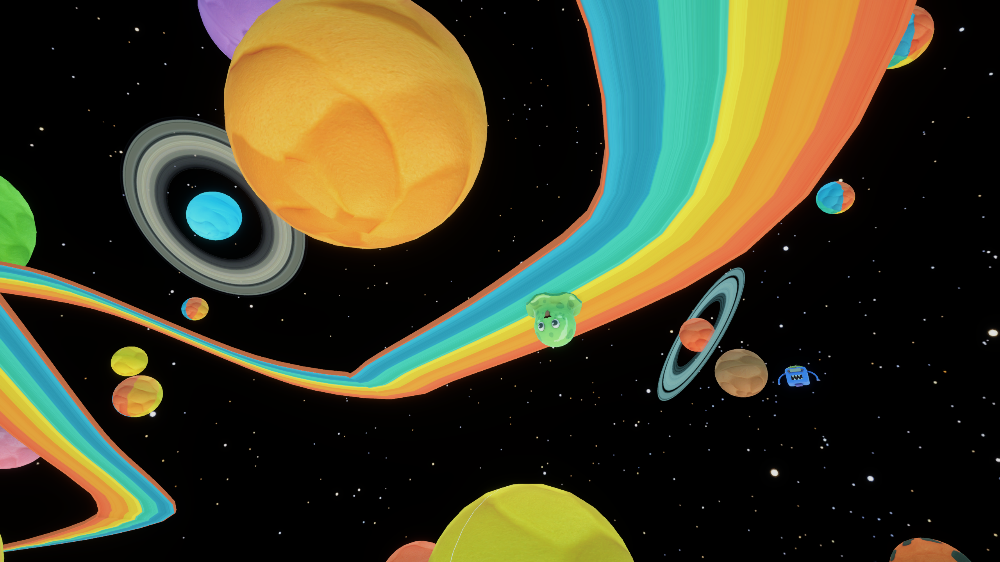
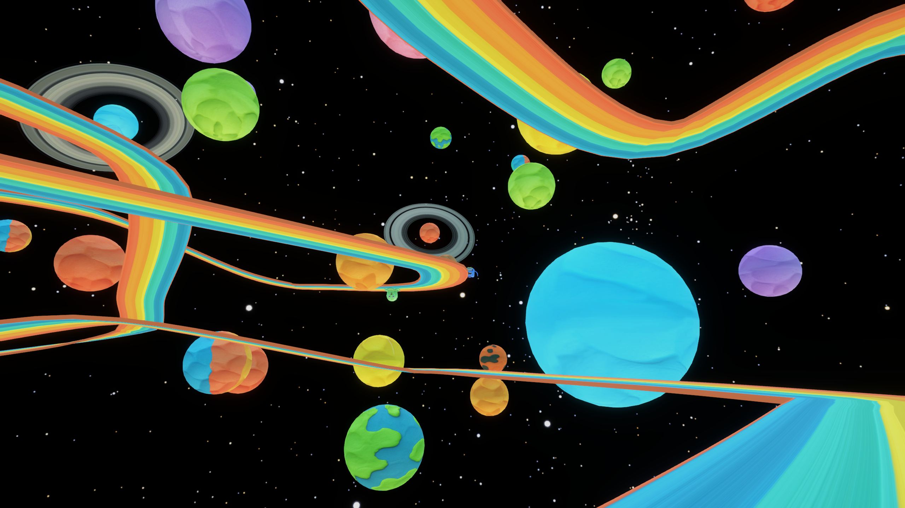
Copyright © Tycho Kerkhofs. All rights reserved.